Це сайт - де можна почитати про всі області України
Центральна Україна
- 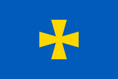 Полтавщина
- 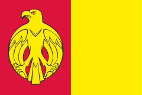 Кировоградщина
- 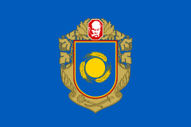 Черкащина
- 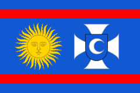 Вінниччина
- 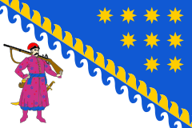 Дніпропитровщина
Північна Україна
- 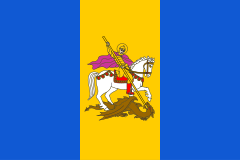 Київщина
- 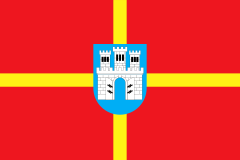 Житомирщина
- 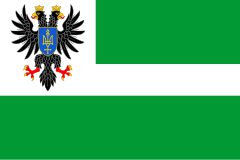 Чернігівщина
- 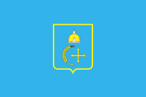 Сумщина
Східна Україна
- 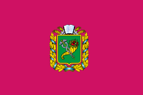 Харьківщина
- 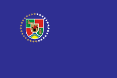 Луганщина
- 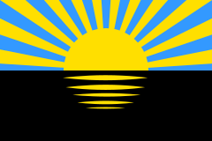 Донеччина
Південна Україна
- 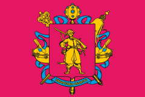 Запоріжжя
- 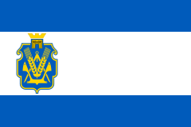 Херсонщина
- 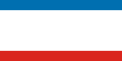 Крим
- 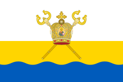 Миколаївщина
- 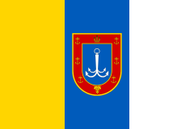 Одещина
Західна Україна
- 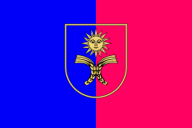 Хмельниччина
- 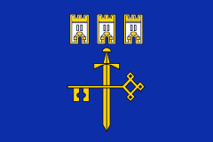 Тернопільщина
- 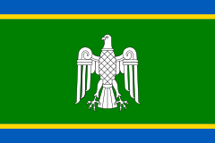 Чернівеччина
- 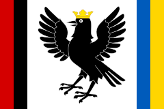 Івано-Франківщина
- 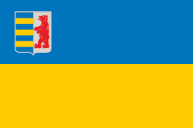 Закарпаття
- 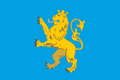 Львівщина
- 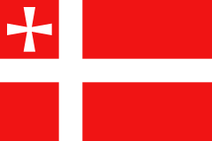 Волинь
- 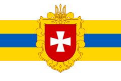 Рівненщина